8.9.1. 模型量化错误及解决方法
8.9.1.1. hb_mapper checker (01_check.sh) 错误
报错信息:
ERROR The shape of model input:input is [xxx] which has dimensions of 0. Please specify input-shape parameter.解决方法： 发生此错误的原因可能是模型输入为动态shape。针对此错误，您可使用参数
--input-shape“input_name input_shape”来指定输入节点的shape信息。报错信息:
ERROR HorizonRT not support these cpu operators: {op_type}解决方法： 发生此错误的原因可能是使用的CPU算子为地平线不支持的CPU算子。 针对此错误，您可以根据我们提供的算子支持列表中的内容对算子进行替换；若不被支持的CPU算子为模型核心算子，请您联系地平线对此进行开发评估。
报错信息:
Unsupported op {op_type}解决方法： 发生此错误的原因可能是使用的BPU算子为地平线不支持的BPU算子。针对此错误，若模型整体性能可满足需要，您可以忽略该日志；若模型整体性能不能达到您的预期，您可以根据我们提供的算子支持列表中的内容对算子进行替换。
报错信息:
ERROR nodes:['{op_type}'] are specified as domain:xxx, which are not supported by official onnx. Please check whether these ops are official onnx ops or defined by yourself解决方法： 发生此错误的原因可能是使用的自定义算子为地平线不支持的自定义算子。针对此错误，您可以根据我们提供的算子支持列表中的内容对算子进行替换或参考自定义算子开发完成自定义CPU算子注册。
8.9.1.2. hb_mapper makertbin (03_build.sh) 错误
报错信息:
Layer {op_name} xxx expect data shape range:[[xxx][xxx]], but the data shape is [xxx] Layer {op_name} Tensor xxx expects be n dimensions, but m provided
解决方法： 发生此错误的原因可能是，{op_name}算子超过支持限制被回退到CPU计算。针对此错误，若CPU算子带来的性能损耗您可接受，则无需关注该信息；若性能不能达到您的要求，您可以根据我们提供的算子支持列表中的内容将该op修改至BPU可支持的范围。
报错信息:
INFO： Layer {op_name} will be executed on CPU解决方法： 发生此错误的原因可能是，{op_name}算子由于shape（CxHxW）超过8192被回退到CPU计算。针对此错误，若仅少数算子被回退CPU计算且模型整体性能满足要求，则无需关注该信息；若性能不满足要求，建议查看算子支持列表，替换为其他无shape限制的BPU算子。
报错信息:
ERROR There is an error in pass: {op_name}. Error message:xxx
解决方法： 发生此错误的原因可能是，{op_name}算子优化失败。针对此错误，请您将模型以及.log文件收集好后提供给地平线技术人员进行分析处理。
报错信息:
Error There is an error in pass:constant_folding. Error message: Could not find an implementation for the node {op_name}
解决方法： 发生此错误的原因可能是该算子onnxruntime暂未支持。针对此错误，您可以根据我们提供的算子支持列表中的内容对算子进行替换，如不被支持的算子为核心算子，请您联系地平线对此进行开发评估。
报错信息:
WARNING input shape [xxx] has length: n ERROR list index out of range
解决方法： 发生此错误的原因可能是目前模型输入暂不支持非四维输入。针对此错误，建议您将模型输入修改至四维（例如HxW -> 1x1xHxW）。
报错信息:
Start to parse the onnx model core dump
解决方法： 发生此错误的原因可能是模型解析失败（可能是导出模型时只为一个output/input节点指定了name）。针对此错误，建议您重新导出onnx并确认其有效性（导出onnx模型时不指定output/input name，或者依次为每个output/input节点指定名称）。
报错信息:
Start to calibrate/quantize the model core dump Start to compile the model core dump
解决方法： 发生此错误的原因可能是模型量化/编译失败。针对此错误，请您将模型以及.log文件收集好后提供给地平线技术人员进行分析处理。
报错信息:
ERROR model conversion faild: Inferred shape and existing shape differ in dimension x: (n) vs (m)
解决方法： 发生此错误的原因可能是onnx模型的输入shape非法，或者是工具优化pass有误。针对此错误，请您确保onnx模型的有效性，若onnx模型可正常推理，请将模型提供给地平线技术人员进行分析处理。
报错信息:
WARNING got unexpected input/output/sumin threshold on conv {op_name}! value: xxx解决方法： 发生此错误的原因可能是数据预处理有误，或该节点weight值太小/太大。针对此错误，1.请您检查数据预处理是否有误；2.我们建议您使用BN算子优化数据分布。
报错信息:
ERROR hbdk-cc compile hbir model failed with returncode -n
解决方法： 发生此错误的原因可能是模型编译失败。针对此错误，请您将模型以及.log文件收集好后提供给地平线技术人员进行分析处理。
报错信息:
ERROR {op_type} only support 4 dim input
解决方法： 发生此错误的原因可能是工具链暂不支持该op输入维度为非四维。针对此错误，我们建议您将该op输入维度调整为四维输入。
报错信息:
ERROR {op_type} Not support this attribute/mode=xxx
解决方法： 发生此错误的原因可能是工具链暂不支持op的该属性。针对此错误，您可以根据我们提供的算子支持列表中的内容进行替换或联系地平线对此进行开发评估。
报错信息:
ERROR There is no node can execute on BPU in this model, please make sure the model has at least one conv node which is supported by BPU.
解决方法： 发生此错误的原因可能是模型中没有可量化的BPU节点。针对此错误，请您确保onnx模型的有效性，且模型中至少使用了一个conv；若前述条件均已满足，请您将模型以及.log文件收集好后提供给地平线技术人员进行分析处理。
报错信息:
ERROR [ONNXRuntimeError] : 9 : NOT_IMPLEMENTED : could not find a implementation for the node of {op_name}:{op_type}(opset)
解决方法： 发生此错误的原因可能是模型opset版本超出工具链支持限制。 针对此错误，请您重新导出模型，确保
opset_version=10或者11。报错信息:
ERROR The opset version of the onnx model is n, only model with opset_version 10/11 is supported
解决方法： 发生此错误的原因可能是模型opset版本超出工具链支持限制。针对此错误，请您重新导出模型，确保
opset_version=10 或者 11。报错信息:
使用run_on_bpu后转换报错。
解决方法： 发生此错误的原因可能是目前暂不支持将该算子run_on_bpu。
run_on_bpu暂仅支持指定模型尾部的Relu/Softmax/pooling（maxpool、avgpool等）算子以及CPU*+Transpose组合（可通过声明Transpose节点名称，将CPU*+Transpose都运行在BPU上，CPU*特指BPU支持的op），若满足前述条件但仍run_on_bpu失败，请您联系地平线技术人员对此进行分析处理；若不满足前述条件，可联系地平线技术人员对此进行开发评估。报错信息:
ERROR tool limits for max output num is 32
解决方法： 发生此错误的原因可能是工具链仅支持模型输出节点数量不超过32。针对此错误，建议您将模型输出节点数量控制在32个以内。
8.9.1.3. 其他工具使用错误
hb_model_modifier 工具使用错误
报错信息:
ERROR Can not find value info {op_name}
解决方法： 针对此错误，请您完整更新最新版本的工具链SDK开发包。
hb_model_verifier 工具使用错误
报错信息:
ERROR Arm result does not exist, program halted
解决方法： 发生此错误后，您可查看终端执行日志相关提示，一般原因为板子连接失败或板端推理失败。针对此错误，若查看到连接失败的相关提示，请您再次确认在当前环境中是否可ping通开发板；若相关提示为板端推理失败，可通过在板端的 /userdata/model_verifier_test路径下执行infer.sh来查看推理失败的具体原因。
报错信息:
ERROR Quanti onnx and Arm result Strict check FAILED
解决方法： 发生此错误的原因可能是模型一致性比对失败。针对此错误，请您将模型提供给地平线技术人员进行分析处理。
hb_onnxruntime 错误
报错信息:
ERROR [ONNXRuntimeError] : 2：INVALID_ARGUMENT : Unexpected input data type. Actual: (N11onnxruntime17PrimitiveDataTypexxx), expected: (N11onnxruntime17PrimitiveDataTypexxx)
解决方法： 发生此错误的原因可能是输入数据格式与模型不匹配。针对此错误，一般来说浮点onnx模型的输入格式为float32，量化后模型输入格式为int8。可使用可视化工具查看onnx模型input节点的属性。
8.9.2. .bin模型上板错误及解决方法
报错信息:
(common.h:79): HR:ERROR: op_name:xxx invalid attr key xxx
解决方法： 发生此错误的原因可能是libDNN暂不支持该op的某个属性。针对此错误，您可以根据我们提供的算子支持列表中的内容进行替换或联系地平线对此进行开发评估。
报错信息:
(hb_dnn_ndarray.cpp:xxx): data type of ndarray do not match specified type. NDArray dtype_: n, given：m
解决方法： 发生此错误的原因可能是libDNN暂不支持该输入类型（后续我们将逐步把算子约束前移至模型转换阶段提醒）。针对此错误，您可以根据我们提供的算子支持列表中的内容进行替换或联系地平线对此进行开发评估。
报错信息:
(validate_util.cpp:xxx)：tensor aligned shape size is xxx , but tensor hbSysMem memSize is xxx, tensor hbSysMem memSize should >= tensor aligned shape size!
解决方法： 发生此错误的原因可能是输入数据申请内存不足。针对此错误，请使用hbDNNTensorProperties.alignedByteSize来申请内存空间。
报错信息:
(bpu_model_info.cpp:xxx): HR:ERROR: hbm model input feature names must be equal to graph node input names
解决方法： 针对此错误，请您完整更新最新版本的工具链SDK开发包。
8.9.3. 模型量化及上板使用技巧
8.9.3.1. 量化感知训练QAT
量化感知训练QAT，是将训练过的模型量化后又再进行重训练。由于定点数值无法用于反向梯度计算，实际操作过程是在某些op前插入 伪量化节点（fake quantization nodes）， 用于在训练时获取流经该op的数据的截断值，便于在部署量化模型时对节点进行量化时使用。我们需要在训练中通过不断优化精度来获取最佳的量化参数。
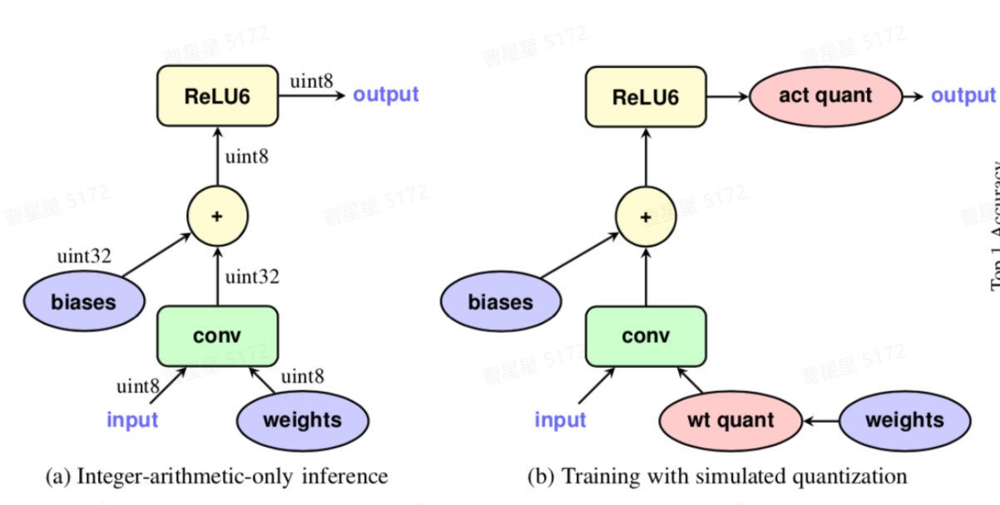
如上图所示，a为量化的定点模型，数据和模型权重均已变为定点数，通常情况下我们希望 后量化（PTQ） 能直接得到a所示的定点模型，并且精度不会损失太多。如果精度损失太多，则需要借助图b所示的 量化感知训练（QAT） 减少量化误差。QAT的基本原理是在浮点模型中插入伪量化节点，使得模型在训练中可以感知到量化误差，减少量化损失的精度。如上图b所示，在模型中针对 conv-weight 和 activation 插入 FakeQuanti 节点。由FakeQuanti模拟量化过程，weight会学习到量化的影响，最终损失精度会更小。
在地平线工具链中，QAT的上下游如下图所示：
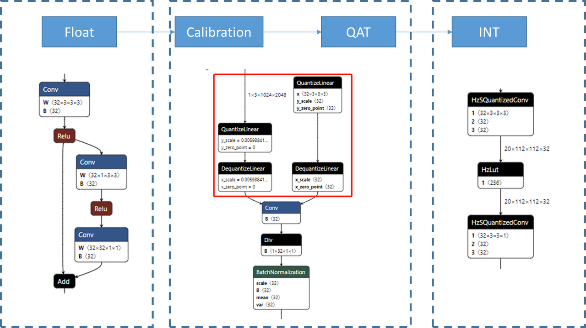
Float: 浮点模型，训练一个正常的浮点模型是QAT的前置步骤，QAT相当于在浮点模型的基础上插入伪量化结点并finetune。
Calibration: 量化校准，伪量化的初始scale有时不太靠谱，在训练之前需要先做校准，避免不合理的scale初始化影响QAT训练。这一步不是必须的，如果QAT模型精度满足要求，那么可以不做calibration，但一般而言calibration有益无害。
QAT：finetune插入了伪量化节点之后的浮点模型。
INT：定点模型，将QAT模型使用地平线转换工具链转换为定点模型，定点模型编译后可以上板。
hemat量化使用说明
使用限制
本章节主要针对用户模型在 PTQ量化 精度不足前提下，来使用QAT的量化手段对模型精度做进一步提升；但因需对模型进行重新训练并调参，对操作人员技术要求比较高，故 不建议普通用户使用。
环境部署
地平线提供两种环境部署方式：docker方式 和 虚拟环境安装 方式，以下给出两种方式的部署方法，其中version根据实际发布包的版本号进行替换。
Docker方式
请参考 环境部署 章节内容。
虚拟环境方式
如果您想在原模型训练环境中完成QAT训练，可联系地平线技术支持人员来获取
hemat-{version}-py3-none-any.whl文件，使用以下命令安装（注：环境对应的torch版本为1.9.1）：pip install hemat-{version}-py3-none-any.whl
模型准备
QAT训练是一种finetune方法，最好是在浮点结果已经拟合的情况下，再用QAT方法提升量化精度。 即用户的训练分为了两个步骤，先训练浮点模型，将模型精度提升到满意的指标；再通过QAT训练，提升量化精度。
地平线主推的社区QAT功能是基于fx graph模式开发的，fx graph模式的社区qat不需要编写 fuse_model 和 set_qconfig，但由于pytorch fx自身的局限性，需要对模型的forward方法进行一些调整以适配 fx。注意事项有以下几点：
a. 避免在
forward中编写不运行在training状态的逻辑。避免生成的graph module会丢失training无关的逻辑（如模型后处理部分）。b. 由于fx不支持动态控制流，因此避免在forward中使用与动态输入有关的语句（if、for、assert等）。对于并非真正的动态（如：height, width），可以以成员变量的形式预先存储在模型中。如无法避免与动态输入相关的控制流，可以将这部分逻辑写为一个函数，使用wrap方法装饰起来，用法见 pytorch社区wrap 章节内容。
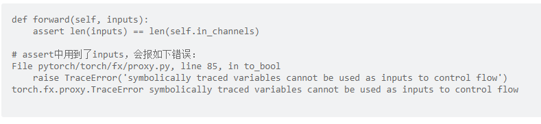
c. python的部分内置方法不支持trace，比如：len。可以使用wrap()修饰不需要被trace的方法，详细用法见 pytorch社区 章节内容。
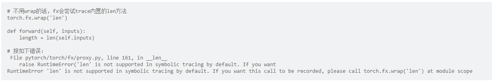
d. 如果有不需要量化的逻辑，可以使用wrap装饰不需要量化的逻辑，这部分逻辑会作为一个整体被trace，中间不会插入伪量化结点。用法见 pytorch社区wrap 章节内容。
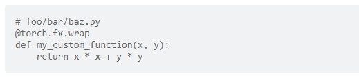
e. 将需要运行在AI芯片上的、需要量化的部分封装为独立的module成员变量，可仅对该部分做量化感知训练。以下写法是地平线推荐的写法：
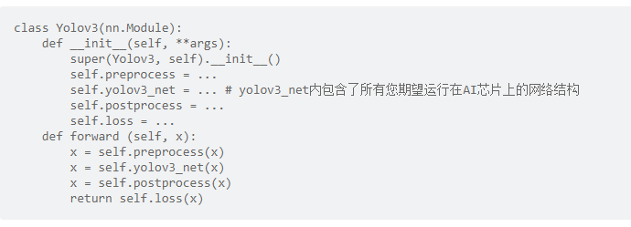
f. 共享conv不共享bn会导致模型在fuse过程混乱导致模型预测完全错误。对于此类问题pytorch在fuse这里的代码中留了todo，后续版本应该会解决这个问题。在当前版本，为了避免这个问题，推荐重点检查参数共享中有无处理完一个分支后影响另一个分支的情况。这类参数共享问题的解决方法建议将QAT模型的conv拆开。
QAT模型量化
模型量化
地平线主推的社区QAT功能是基于 fx graph模式 开发的。用户只需要对模型结构做出少量调整。通过调用torch的量化接口 prepare_qat_fx，使用地平线提供的量化策略配置，即可完成QAT模型的构造。本章节主要对prepare_qat_fx接口以及地平线提供的量化策略配置做介绍。
prepare_qat_fx
该接口为torch提供的模型量化接口，作用为将浮点模型转为一个可以进行量化感知训练的Prepare模型。定义如下：
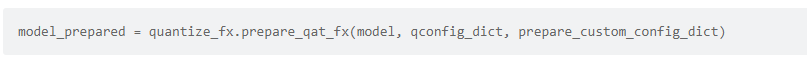
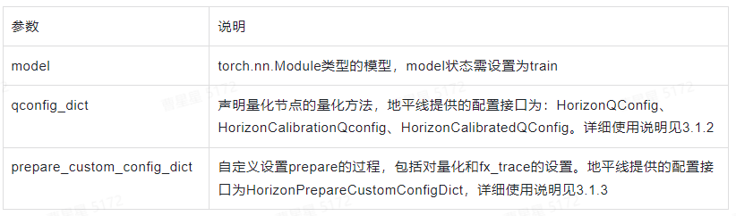
当用户调用prepare_qat_fx时，会进行以下步骤：
a. 构建静态图：使用
fx工具trace整个网络结构（可使用prepare_custum_config_dict指定某一块不被trace），构建出一个静态的网络结构。b. 融合特定网络结构：加载默认的和用户定义的
fuse pattern配置，对网络结构进行遍历、融合，例如pytorch默认会把conv+bn+relu融合为instrice.ConvBnRelu。c. 转换网络结构：加载默认的和用户定义的
convert pattern配置，将网络中特定的网络结构转换为指定的网络结构。d. 量化网络结构：加载默认的和用户定义的
quantize pattern，在需量化的节点位置插入伪量化结点。
qconfig_dict
qconfig_dict作用为声明量化节点的量化方法，例如 非对称、per-tensor 等方法，地平线支持的量化方式为：Weight: Int8 per channel symetric；Activation: Int8 per tensor symetric。目前地平线支持的量化qconfig为以下3种配置：
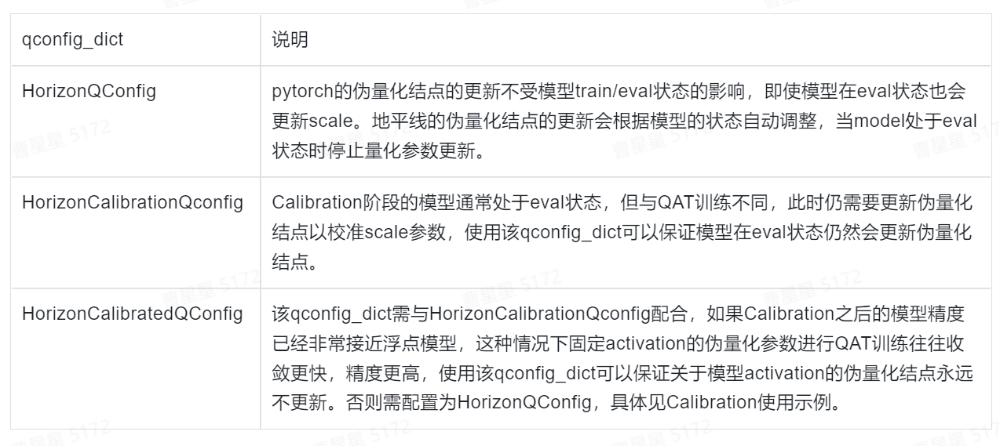
如果用户有自定义qconfig的需求，可以参照
pytorch官方文档和地平线提供的三个qconfig_dict进行自定义，需要注意的是量化方式需要和地平线保持一致！
Calibration的使用不是必须的，但是几乎对于所有模型都有提升，因此建议您可以尝试先使用Calibration对量化参数做初始化，以下提供两个示例分别为使用Calibration和未使用Calibration下如何使用：
不使用Calibration
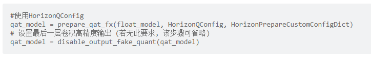
使用Calibration
Calibration的实现方式很多，这里给用户推荐两种最简单的实现：
方式1：使用
HorizonQConfig，在QAT训练的前2000-5000个step将学习率设为0，这样模型权重不会更新，但伪量化结点会更新。
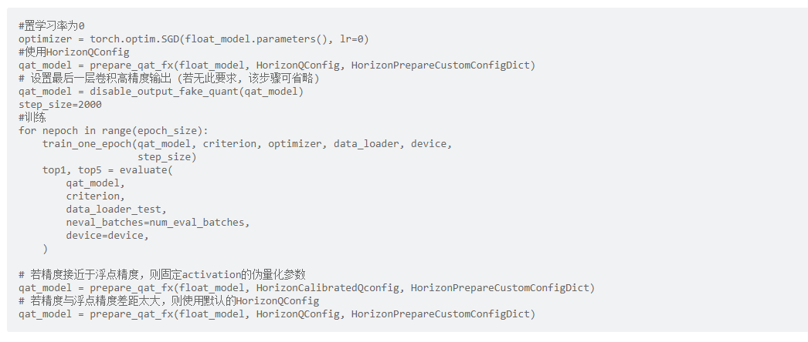
方式2：使用
HorizonCalibrationQConfig，将模型设置为eval()，使用训练数据运行2000-5000次前向推理。
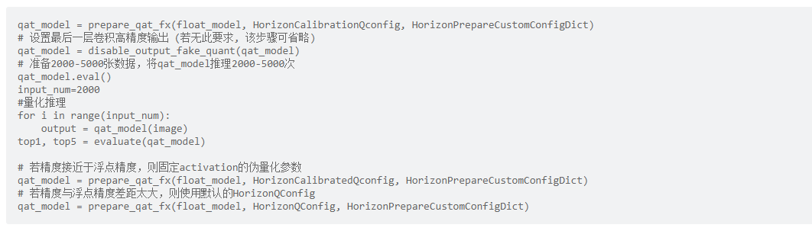
prepare_custom_config_dict
prepare_custom_config_dict 作用为自定义设置prepare的过程，例如：指定不量化某一层、指定不使用FX追踪某一层、指定某些结构（avgpooling+relu）可以打包量化等。
地平线提供 HorizonPrepareCustomConfigDict作为 prepare_custom_config_dict，主要定义了关于 add 和 pooling 等算子的量化方式。若用户有自定义prepare_custom_config_dict的需求，建议用户先查看 pytorch官方文档prepare-fx 章节，以下列出与QAT有关的常见配置选项：
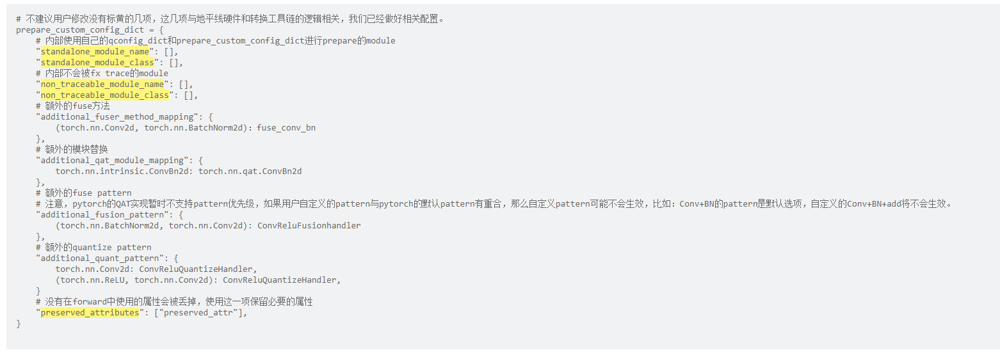
若您需要自定义 prepare_custom_config_dict 时，请在 HorizonPrepareCustomConfigDict 的基础上进行修改，以免 add 和 pooling 等算子的量化方式不正确。见示例：
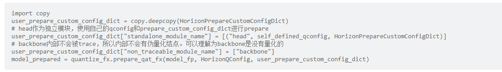
其他量化配置
除了相关配置外，地平线也针对pytorch社区QAT制作了一些方便使用的接口。本章将对这些接口做介绍和使用说明。
输入/输出量化配置
接口：disable_input_fake_quant && disable_output_fake_quant
作用：关闭模型输入输出的伪量化操作。
使用情景：
disable_input_fake_quant：
如果确认模型的输入是量化过的，可以使用disable_input_fake_quant。对于_modules中存在但 named_modules 中没有的情况不能保证disable_input_fake_quant如预期工作，可以通过打印模型确认节点是否被禁用，如果没有被禁用则需要手动使用disable_fake_quant()摘除伪量化节点，详细用法参考 模型结构检查 章节。
disable_output_fake_quant：
算子以 conv 、 matmul 结尾可使用 disable_output_fake_quant 实现高精度输出，如果输出是 sigmoid， tanh 等无法支持高精度输出的算子，且仍然希望这部分运行在BPU上，则不需要调用disable_output_fake_quant；对于_modules中存在但named_modules中没有的情况不能保证disable_output_fake_quant如预期工作，可以通过打印模型确认节点是否被禁用，如果没有被禁用则需要手动使用disable_fake_quant()摘除伪量化节点，详细用法参考 模型结构检查 章节。
通过打印模型可以看到伪量化结点有fake_quant_enable变量，该变量控制该结点是否做量化操作，为1则量化，为0则不量化。
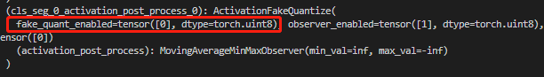
如不需要对输入输出量化可通过调用 disable_input_fake_quant 或 disable_output_fake_quant 将对应伪量化结点的 fake_quant_enable 置 0。使用方式见示例：
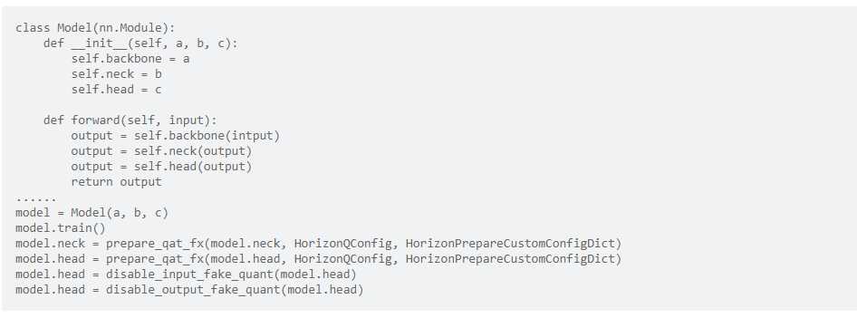
在以上示例中仅对 neck 和 head 做了量化，neck的输入来自于backbone，未量化过，所以neck不需要调用 disable_input_fake_quant，而neck不是模型的最终输出，所以也不需要调用disable_output_fake_quant。head的输入来自neck，已经经过量化，所以head的输入不需要量化，同时head的输出是模型的最终输出，所以两个方法都需要调用。
量化状态train/eval配置
接口：set_qat_eval && set_qat_train
作用：设置QAT模型 train 和 eval 的状态，控制伪量化的 scale 等参数的更新（该接口控制的是伪量化节点的train/eval状态，非模型的train/eval状态！）。
打印模型可以看到伪量化结点有 observer_enable 变量，该变量控制伪量化的scale等参数是否更新。开启时值为1，伪量化的scale等参数在每次forward中都会根据observer统计到的min，max进行更新，关闭时为0，停止更新。
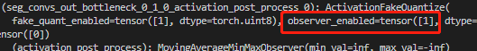
通过调用 set_qat_eval && set_qat_train 可以改变 observer_enable 的状态。当使用set_qat_eval 时observer_enable变为0，调用set_qat_train后，observer_enable将变为1。需要注意的是，当使用HorizonQConfig 时无需调用set_qat_eval && set_qat_train接口，在内部逻辑中量化参数的更新会根据模型状态做调整，模型处于 eval 状态时，量化参数不再更新，处于training时量化参数更新。具体使用方法示例：
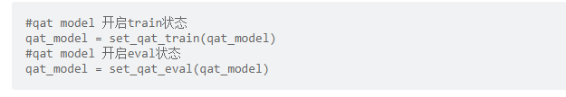
模型结构检查
为保证量化的正确性，建议您在 prepare_qat_fx 后，将已插入伪量化的节点的QAT模型进行打印，通过观察以下四点来对模型伪量化结构进行检查：
检查需量化的模型节点
对需插入伪量化节点的位置检查是否正确插入，标识为 weight_fake_quant 和 activation_post_process。下图为 conv+BN+ReLU 在prepare_qat时融合为 ConvBnReLU2d，从图中可以看出weight有了伪量化，weight的伪量化一般都是放在模块内。
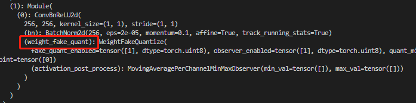
下图表明 cls_seg_0 模块的输出已经有了伪量化结点。输出的伪量化一般都放在模块外，且名称以 activation_post_process 结尾。
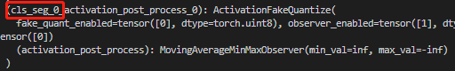
检查无需量化的模型节点
检查非必要模块是否插入了量化节点。loss, post_process 等与inference无关或没有量化需求的模块不需要插入量化节点，否则会引入不必要的误差。同时强烈建议比照PTQ模型算子运行情况（BPU/CPU），检查QAT模型结构，将所有CPU算子的伪量化节点去掉，能减少部署时可能产生的转换问题。
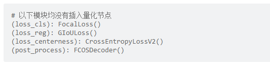
若出现无需量化的位置插入了伪量化节点可以通过查看节点所在位置，使用 disable_fake_quant() 手动去除量化节点。使用方法见示例：
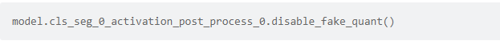
模型输出节点的检查
查看输出的伪量化结点是否已经禁用。如果没有禁用，则需要调用 disable_output_fake_quant 将 fake_quant_enable 置 0，具体用法和注意事项见章节 输入/输出量化配置 内容。
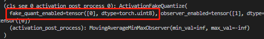
注册算子节点的检查
在import HorizonPrepareCustomConfigDict 时，程序会自动向pytorch注册几个 固定scale 的算子（sigmoid,tanh…）的量化方法，这一部分无需用户显式调用，程序自动完成。用户可以检查QAT模型中的sigmoid等算子的输出伪量化对应的scale是否为同样的固定值。
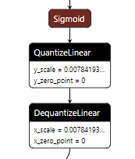
量化训练策略
a. 开启calibration。从下图可以看到，如果不做calibration，初始的scale值为
1，做完calibration之后，该值应小于1，开启方法见章节 qconfig_dict。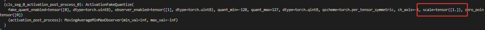
注：calibration阶段，数据不要使用augmentation，前处理和推理阶段保持一致。
b. 若使用多卡且batchsize较小，建议开启
同步BNc. 绝大部分情况下，
batch size尽可能大一些，最好打满显存。有的时候太大也不好（一般发生在大于128时），具体取值需调参尝试。原理见：怎么选取训练神经网络时的Batch size?d. 减弱data augmentation。由于量化误差的存在，QAT模型的拟合能力会弱于float模型。减弱并非全部关闭，可关闭较复杂的
data augmentation,保留部分基础的data augmentation。e. 通过前处理改变输入分布，确保输入数据分布合理，均值为
0，最好是均匀分布，其次为高斯分布，避免长尾分布，强烈推荐用户将输入映射到[-1, 1]，尽量避免只有正/负数值域的表示。f. weight decay一般设置为
4e-5，可根据实际实验情况调整。weight decay过小导致weight方差过大，weight decay过大导致输出较大的任务（比如检测的bbox回归）输出层weight方差过大。g. learning rate一般从
0.001左右开始设置，可根据实际实验情况调整。一般可以搭配StepLrUpdater做1-2次scale=0.1的decay。learning rate的最小值最好不要小于1e-6h. 不推荐使用warmup。QAT属于finetune任务，
warmup初期学习率过小，对QAT几乎没有加成，甚至会降低QAT精度。i. epoch长度不固定，一般选为
floatepoch大小的十分之一到二分之一不等。j. 最优精度的QAT模型一般在第一个epoch结果的基础上提升不超过3个点，如果第一个epoch的指标较低，那么基本可以断定最后模型的结果不会很好。
k. 如果单次训练的
batch size较小，固定住BN的均值和方差可能取得意想不到的效果。示例见下：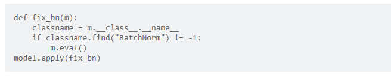
l. 调整
averaging_constant，取值范围为（0, 1]。伪量化结点中的observer通常采用滑动平均的方式更新，averaging_constant控制当前值的影响程度。averaging_constant越大，当前值影响越大，反之影响越小。在scale初始化不靠谱时，调大averaging_constant效果较好；在训练稳定性较差或者数据集较小的任务，调小averaging_constant效果较好。averaging_constant定义见示例：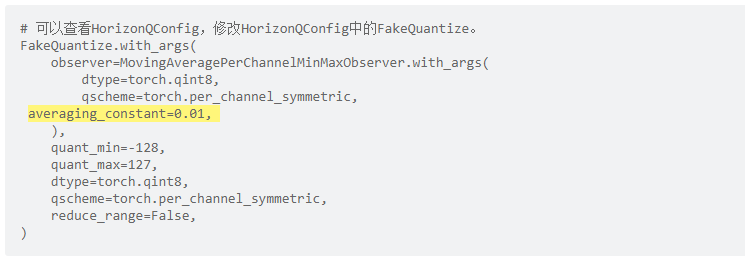
m. 多选用
不同epoch的浮点模型做QAT，有时并非最好的浮点模型就能训出最好的QAT模型。最好的浮点模型往往处于过拟合的边缘，此时进行QAT不一定最好。n. 没有calibration的情况下
Weight与fake quantize交替更新效果比较明显。weight与fake quantize scale的收敛方向可能不一致，同时调整两者可能产生冲突。
量化精度验证
精度验证
QAT的精度验证过程与浮点精度验证原理相同，可直接复用浮点模型评测代码，见代码示例：
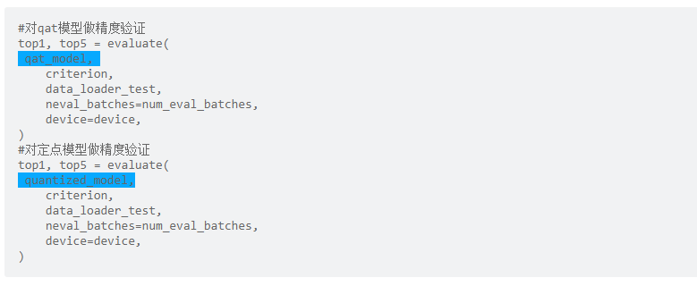
问题定位
得到QAT模型精度以后，如果发现掉点问题，请按照如下步骤定位问题：
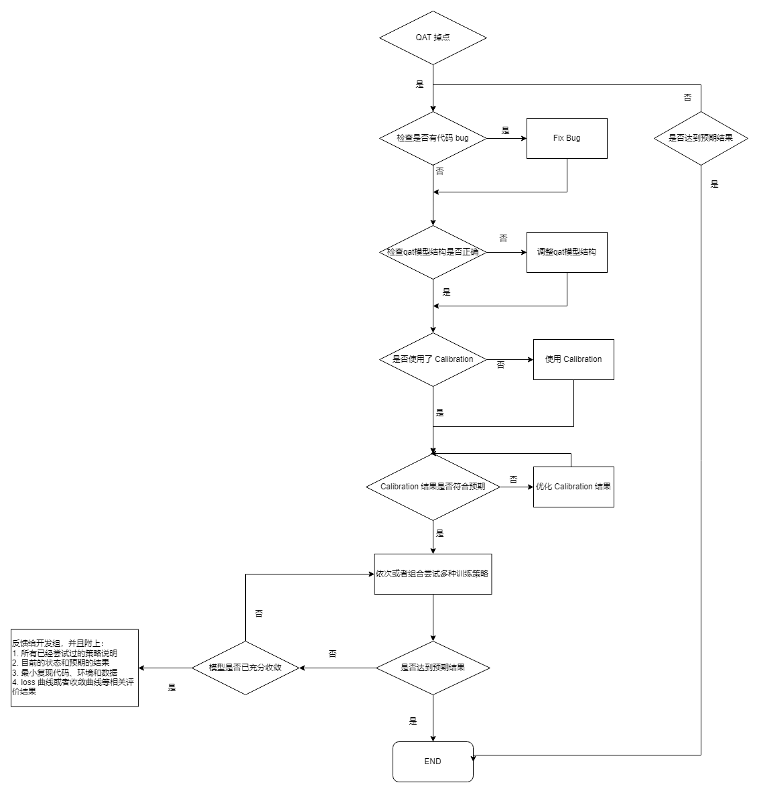
模型编译
模型上板需编译为 .bin，地平线提供以下两种方式实现：
export to onnx + hb_mapper makertbin 工具(推荐首选方式)
使用
export_to_onnx接口将qat_model导出qat_model.onnx，再使用工具链hb_mapper makertbin工具通过对yaml文件中的calibration_type设置为'load'，即可实现将qat_model.onnx编译为.bin文件. 该方法的工具开发比较完善, 因此推荐用户优先使用该方法. export_to_onnx使用方法见示例：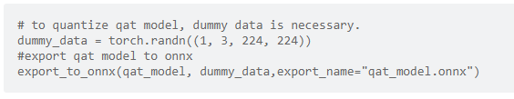
convert + compile
使用
convert将qat model转化为quantilized model，再通过compile接口将quantilized model编译为可上板的.bin，convert过程中会产出中间结果onnx_temp.onnx，与后文介绍的export_to_onnx接口的产物相同。该方法由于尚在开发中, 因此部分功能实现并不完善，使用见示例：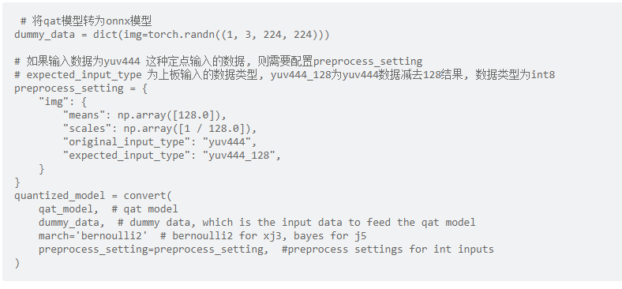
示例代码
import torch
from torch.quantization.quantize_fx import prepare_qat_fx
from hemat.torch.quantization import (
HorizonQConfig,
HorizonPrepareCustomConfigDict,
disable_output_fake_quant,
)
from hemat.torch.quantization import set_qat_eval, set_qat_train
from horizon_nn.torch import export_onnx, convert
from horizon_tc_ui.torch.qat_compile import compile
def load_model():
pass
def accuracy():
pass
def evaluate():
pass
def train():
pass
def prepare_data_loaders():
pass
data_loader = prepare_data_loaders()
float_model = load_model()# 用户训练好的模型
# 按照HorizonQConfig配置量化策略
qat_model = prepare_qat_fx(float_model, HorizonQConfig, HorizonPrepareCustomConfigDict)
# 设置最后一层卷积高精度输出 (若无此要求, 该步骤可省略)
qat_model = disable_output_fake_quant(qat_model)
# 检查一下QAT模型结构是否正确
# print(qat_model)
for nepoch in range(epoch_size):
# 设置模型为训练模式, 开启量化参数更新
qat_model = set_qat_train(qat_model)
train(qat_model)
# 设置模型为评测模式, 停止量化参数更新
qat_model = set_qat_eval(qat_model)
top1, top5 = eval(qat_model)
# 将训练好的模型进行保存
save_dict = {'state_dict':qat_model.state_dict()}
torch.save(save_dict,"qat_best.pth")
# 将qat模型导出为 onnx 格式
dummy_data = torch.randn(1, 3, 224, 224,device=device)
export_onnx(qat_model, dummy_data, export_name="qat_model.onnx",opset_version=11)
# 得到 qat_model.onnx 之后, 就可以使用 hb_mapper makertbin工具进行后续的定点化及编译流程了.
# 如果使用该方法的话, 流程至此就可以结束了.
# 上述储存的pytorch模型在储存后读取方式的介绍.
float_model = load_model()
qat_model = prepare_qat_fx(float_model.train(), HorizonQConfig, HorizonPrepareCustomConfigDict)
state_dict = torch.load('qat_best.pth')['state_dict']
qat_model.load_state_dict(state_dict)
# 若不打算导出onnx模型, 由hb_mapper makertbin工具进行后续转换, 则需要使用
# convert + compile 接口的组合.
# 如果输入数据为yuv444 这种定点输入的数据, 则需要配置preprocess_setting
# expected_input_type 为上板输入的数据类型, yuv444_128为yuv444数据减去128结果, 数据类型为int8
preprocess_setting = {
"img": {
"means": np.array([128.0]),
"scales": np.array([1 / 128.0]),
"original_input_type": "yuv444",
"expected_input_type": "yuv444_128",
}
}
quantized_model = convert(
qat_model, # qat model
dummy_data, # dummy data, which is the input data to feed the qat model
march='bernoulli2' # bernoulli2 for xj3, bayes for j5
preprocess_setting=preprocess_setting, #定点输入的前处理
)
# 将定点onnx模型转为异构bin模型
compile(quantized_model,
"test.bin",
march="bayes",
rt_input_type="yuv444",
rt_input_layout="NCHW",
opt=opt,
)
8.9.3.2. Transformer使用说明
本章节将对各个transformer的概念及参数进行说明，并为您提供参考使用示例，方便您进行tranformer操作。
在文档内容开始阅读前，以下内容请您注意：
图片数据为
三维数据，但地平线提供的transformer都是以四维数据的方式来进行获取和处理的，transformer只会对输入数据中的第0张图片做该操作。
AddTransformer
说明：
对输入图片中的所有像素值做增加value的操作。该transformer会在输出时, 将数据格式转为float32。
参数：
value: 对每个像素做增加的数值, 注意value的取值可以为负数, 如 -128。
使用举例：
# 对图像数据做减去128的操作
AddTransformer(-128)
# 对图像数据做增加127的操作
AddTransformer(127)
MeanTransformer
说明：
对输入图片中的所有像素值做减去 mean_value 的操作。
参数：
means: 对每个像素做增加的数值, 注意value的取值可以为负数, 如 -128。
data_format: 输入的layout类型，取值范围为[”CHW”,”HWC”], 默认 “CHW”。
使用举例：
# 每个像素减去128.0 输入的类型为CHW
MeanTransformer(np.array([128.0, 128.0, 128.0]))
# 每个像素减去不同的数值，103.94, 116.78, 123.68，输入的类型为 HWC
MeanTransformer(np.array([103.94, 116.78, 123.68]), data_format="HWC")
ScaleTransformer
说明：
对输入图片中的所有像素值做乘以data_scale系数的操作。
参数：
scale_value: 需要乘以的系数，如0.0078125 或者1/128。
使用举例：
# 将取值范围-128~127，所有的像素的调整到-1~1之间
ScaleTransformer(0.0078125)
# 或者
ScaleTransformer(1/128)
NormalizeTransformer
说明：
用于对输入图片进行归一化的操作。该transformer会在输出时, 将数据格式转为float32。
参数：
std：输入的第一张图片，需要除以的数值。
使用举例：
# 将取值范围[-128, 127] 所有的像素的调整到-1~1之间
NormalizeTransformer(128)
TransposeTransformer
说明：
用于做layout转换的操作。
参数：
order: 对输入图片做layout转换后的顺序（顺序与原有的layout顺序有关）。如：HWC的顺序为0,1,2，需要转为CHW时，order为(2,0,1)。
使用举例：
# HWC转到CHW
TransposeTransformer((2, 0, 1))
# CHW转到HWC
TransposeTransformer((1, 2, 0))
HWC2CHWTransformer
说明：
用于将NHWC转换为NCHW的操作。
参数：不涉及。
使用举例：
# NHWC转到NCHW
HWC2CHWTransformer()
CHW2HWCTransformer
说明：
用于将NCHW转换为NHWC的操作。
参数：不涉及。
使用举例：
# NCHW转到 NHWC
CHW2HWCTransformer()
CenterCropTransformer
说明：
以直接截断取值的方式从图片中心裁剪出一个正方形的图片的操作。该transformer会在输出时, 将数据格式转为float32。当data_type的值为uint8时，输出为uint8。
参数：
crop_size: 中心裁剪的正方形的边长size。
data_type: 输出结果的类型，取值范围为[”float”, “uint8”]。
使用举例：
# 以224*224的方式，做中心裁剪，默认输出类型为float32
CenterCropTransformer(crop_size=224)
# 以224*224的方式，做中心裁剪，输出类型为uint8
CenterCropTransformer(crop_size=224, data_type="uint8")
PILCenterCropTransformer
说明：
使用PIL的方式从图片中心裁剪出一个正方形的图片的操作。该transformer会在输出时, 将数据格式转为float32。
参数：
size: 中心裁剪的正方形的边长size。
使用举例：
# 以224*224的方式，使用PIL的方式做中心裁剪
PILCenterCropTransformer(size=224)
LongSideCropTransformer
说明：
用于做长边裁剪的操作。该 transformer 会在输出时, 将数据格式转为float32。
当宽度比高度的数值大时，会裁剪出一个中心以高度大小为准的正方形，如宽100，高70，裁剪之后大小为70*70。
当高度比宽度的数值大时，会裁剪出一个中心以宽度大小不变，高度为差值的一半+宽度 的长方形，如宽70，高100，裁剪之后大小为 70*（100-70）/2+70 ，即70* 85大小的长方形。
参数：不涉及。
使用举例：
LongSideCropTransformer()
PadResizeTransformer
说明：
使用填充的方式做图像放大的操作。该 transformer 会在输出时, 将数据格式转为float32。
参数：
target_size：目标大小，值为元组，如(240,240)。
pad_value：填充到数组中的值，默认值为127。
pad_position：填充的位置，取值范围为[”boundary”， “bottom_right”]，默认值为 “boundary”。
使用举例：
# 裁剪一个大小为512*512，填充到右下角，填充值为0
PadResizeTransformer((512, 512), pad_position='bottom_right', pad_value=0)
# 裁剪一个大小为608*608，填充到边框，填充值为 127
PadResizeTransformer(target_size=(608, 608))
ResizeTransformer
说明：
用于调整图像大小的操作。
参数：
target_size：目标大小，值为元组，如(240,240)。
mode：图片处理模式，取值范围为(”skimage”，”opencv”)，默认值为 “skimage”。
method：插值的方法，此参数仅在mode为skimage时生效。取值范围为0-5，默认值为1，其中：
0代表Nearest-neighbor；
1代表Bi-linear(default)；
2代表Bi-quadratic;
3代表Bi-cubic;
4代表Bi-quartic;
5代表Bi-quintic。
data_type：输出的类型，取值范围为(uint8，float)，默认为float类型。当被设置为uint8时，输出类型为uint8 ，其他情况为float32。
interpolation：插值的方法，此参数仅在mode为opencv时生效。默认为空，取值范围为(opencv的插值方式)， 目前interpolation仅支持为空或opencv中的INTER_CUBIC两种插值方法，当interpolation为空时，默认使用INTER_LINEAR方式。
以下为opencv中支持的插值方式及说明（目前未支持的插值方式将在后续迭代中逐步支持）：
INTER_NEAREST，最近邻插值；
INTER_LINEAR，双线性插值，当interpolation为空时，默认使用这种方法。
INTER_CUBIC，双三次插值4x4像素邻域内的双立方插值。
INTER_AREA，使用像素面积关系重采样。它可能是图像抽取的首选方法，因为它可以提供无莫尔条纹的结果。但是当图像被缩放时，它类似于INTER_NEAREST方法。
INTER_LANCZOS4，8x8邻域的Lanczos插值。
INTER_LINEAR_EXACT，位精确双线性插值。
INTER_NEAREST_EXACT，位精确最近邻插值。这将产生与PIL、scikit-image或Matlab中的最近邻方法相同的结果。
INTER_MAX，插值代码的掩码。
WARP_FILL_OUTLIERS，标志，填充所有目标图像像素。如果其中一些对应于源图像中的异常值，则将它们设置为零。
WARP_INVERSE_MAP，标志，逆变换。
使用举例：
# 将输入图片大小调整为224*224，采用 opencv 的方式处理图片，插值的方式为双线性，输出为float32
ResizeTransformer(target_size=(224, 224), mode='opencv', method=1)
# 将输入图片大小调整为256*256，采用skimage的方式处理图片，插值的方式为双线性，输出为float32
ResizeTransformer(target_size=(256, 256))
# 将输入图片大小调整为256*256，采用skimage的方式处理图片，插值的方式为双线性，输出为uint8
ResizeTransformer(target_size=(256, 256), data_type="uint8")
PILResizeTransformer
说明：
使用PIL库做调整图像大小的操作。
参数：
size：目标大小，值为元组，如(240,240)。
interpolation：指定插值的方式，取值范围：(Image.NEAREST，Image.BILINEAR，Image.BICUBIC，Image.LANCZOS)， 默认值为Image.BILINEAR。
Image.NEAREST：最近邻采样；
Image.BILINEAR：线性插值；
Image.BICUBIC：三次样条插值；
Image.LANCZOS：高质量下采样滤波器。
使用举例：
# 将输入图片大小调整为256*256 插值的方式为线性插值
PILResizeTransformer(size=256)
# 将输入图片大小调整为256*256 插值的方式为高质量下采样滤波器
PILResizeTransformer(size=256, interpolation=Image.LANCZOS)
ShortLongResizeTransformer
说明：
按照原比例对输入图片进行缩放的操作，新图片的大小与设置的参数有关。操作方式如下：
先以short_size的大小除以原图片的宽和高里最小值，以这个值为缩放比例系数。
当缩放比例系数乘以原图片的宽和高中的最大值，得到的结果大于long_size的数值时，缩放比例系数将变更为long_size除以原图片的宽和高中的最大值。
使用opencv中的resize方法，根据上方得到的缩放比例系数重新裁剪图片。
参数：
short_size：预期裁剪后的短边的长度。
long_size：预期裁剪后的长边的长度。
include_im：默认值为True，设置为True时, 会在返回时除了返回处理后的图片, 还会返回原图片。
使用举例：
# 短边长度为20，长边长度为100，返回处理后的图片及原图片
ShortLongResizeTransformer(short_size=20, long_size=100)
PadTransformer
说明：
通过用目标大小的size值除以输入图片宽或者高里的最大值为系数，然后使用这个系数乘以原有的宽高，resize图片。 然后根据新图片的大小，除以size_divisor后向上取整后，再乘以size_divisor，为新的宽高，生成新的图片的操作。
参数：
size_divisor：大小除数 ，默认值为128。
target_size：目标大小，默认值为512。
使用举例：
# pad大小为1024*1024
PadTransformer(size_divisor=1024, target_size=1024)
ShortSideResizeTransformer
说明：
根据期望的短边的长度，使用现在的长短边的比例，中心裁剪出新的图片大小的操作。
参数：
short_size：预期的短边的长度。
data_type：输出结果的类型，取值范围为(”float”,”uint8”)，默认取值”float32”, 以 float32 类型输出，设置为uint8时，输出类型将为uint8。
interpolation：指定插值的方式，取值范围为 opencv 中采用的插值方式，默认为空。
目前interpolation仅支持为空或opencv中的INTER_CUBIC两种插值方法，当interpolation为空时，默认使用INTER_LINEAR方式。
以下为opencv中支持的插值方式及说明（目前未支持的插值方式将在后续迭代中逐步支持）：
INTER_NEAREST，最近邻插值；
INTER_LINEAR，双线性插值，当interpolation为空时，默认使用这种方法。
INTER_CUBIC，双三次插值4x4像素邻域内的双立方插值。
INTER_AREA，使用像素面积关系重采样。它可能是图像抽取的首选方法，因为它可以提供无莫尔条纹的结果。但是当图像被缩放时，它类似于INTER_NEAREST方法。
INTER_LANCZOS4，8x8邻域的Lanczos插值。
INTER_LINEAR_EXACT，位精确双线性插值。
INTER_NEAREST_EXACT，位精确最近邻插值。这将产生与PIL、scikit-image或Matlab中的最近邻方法相同的结果。
INTER_MAX，插值代码的掩码。
WARP_FILL_OUTLIERS，标志，填充所有目标图像像素。如果其中一些对应于源图像中的异常值，则将它们设置为零。
WARP_INVERSE_MAP，标志，逆变换。
使用举例：
# 将短边大小调整为256，插值方式为双线性插值
ShortSideResizeTransformer(short_size=256)
# 将短边大小调整为256，插值方式为8x8像素邻域内的Lanczos插值
ShortSideResizeTransformer(short_size=256, interpolation=Image.LANCZOS4)
PaddedCenterCropTransformer
说明：
使用填充的方式对图片中心进行裁剪的操作。
.. attention::
仅适用于EfficientNet-lite相关实例模型。
计算方式为：
计算系数，int((float( image_size ) / ( image_size + crop_pad ))。
计算中心size的大小， 系数 * np.minimum( 原始图片的高度, 原始图片的宽度 ))。
根据计算出来的size大小，做中心裁剪。
参数：
image_size：图片的大小，默认值为224。
crop_pad：中心填充的大小，默认值为32。
使用举例：
# 裁剪大小为240*240，填充值为32
PaddedCenterCropTransformer(image_size=240, crop_pad=32)
# 裁剪大小为224*224，填充值为32
PaddedCenterCropTransformer()
BGR2RGBTransformer
说明：
将输入格式由BGR转成RGB的操作。
参数：
data_format：数据格式，取值范围为(CHW,HWC)，默认值为CHW。
使用举例：
# layout为NCHW时，做BGR转为RGB
BGR2RGBTransformer()
# layout为NHWC时，做BGR转为RGB
BGR2RGBTransformer(data_format="HWC")
RGB2BGRTransformer
说明：
将输入格式由RGB转成BGR的操作。
参数：
data_format：数据格式，取值范围为(CHW,HWC)，默认值为CHW。
使用举例：
# layout为NCHW时，做RGB转成BGR
RGB2BGRTransformer()
# layout为NHWC时，做RGB转成BGR
RGB2BGRTransformer(data_format="HWC")
RGB2GRAYTransformer
说明：
将输入格式由RGB转成GRAY的操作。
参数：
data_format：输入的layout类型，取值范围(”CHW”,”HWC”)，默认为”CHW”。
使用举例：
# layout为NCHW时，做RGB转成GRAY
RGB2GRAYTransformer(data_format='CHW')
# layout为NHWC时，做RGB转成GRAY
RGB2GRAYTransformer(data_format='HWC')
BGR2GRAYTransformer
说明：
将输入格式由 BGR 转成 GRAY 的操作。
参数：
data_format：输入的layout类型，取值范围 [”CHW”,”HWC”]，默认值为”CHW”。
使用举例：
# layout为NCHW时，做BGR转成GRAY
BGR2GRAYTransformer(data_format='CHW')
# layout为NHWC时，做BGR转成GRAY
BGR2GRAYTransformer(data_format='HWC')
RGB2GRAY_128Transformer
说明：
输入格式由RGB转成GRAY_128的操作。GRAY_128取值范围为(-128,127)。
参数：
data_format：输入的layout类型，取值范围为[”CHW”,”HWC”]，默认值为”CHW”，此项为必填项。
使用举例：
# layout为NCHW时，做RGB转成GRAY_128
RGB2GRAY_128Transformer(data_format='CHW')
# layout为NHWC时，做RGB转成GRAY_128
RGB2GRAY_128Transformer(data_format='HWC')
RGB2YUV444Transformer
说明：
将输入格式由RGB转成YUV444的操作。
参数：
data_format：输入的layout类型，取值范围为[”CHW”, “HWC”]，默认值为”CHW”，此项为必填项。
使用举例：
# layout为NCHW时，做BGR转成YUV444
BGR2YUV444Transformer(data_format='CHW')
# layout为NHWC时，做BGR转成YUV444
BGR2YUV444Transformer(data_format='HWC')
BGR2YUV444Transformer
说明：
将输入格式由BGR转成YUV444的操作。
参数：
data_format：输入的layout类型，取值范围为[”CHW”,”HWC”]，默认值为 “CHW”，此项为必填项。
使用举例：
# layout为NCHW时，做BGR转成YUV444
BGR2YUV444Transformer(data_format='CHW')
# layout为NHWC时，做BGR转成YUV444
BGR2YUV444Transformer(data_format='HWC')
BGR2YUV444_128Transformer
说明：
将输入格式由BGR转成YUV444_128的操作。YUV444_128取值范围为(-128,127)。
参数：
data_format：输入的layout类型，取值范围为[”CHW”,”HWC”]，默认值为 “CHW”，此项为必填项。
使用举例：
# layout为NCHW时，做BGR转成YUV444_128
BGR2YUV444_128Transformer(data_format='CHW')
# layout为NHWC时，做BGR转成YUV444_128
BGR2YUV444_128Transformer(data_format='HWC')
RGB2YUV444_128Transformer
说明：
将输入格式由RGB转成YUV444_128的操作。YUV444_128取值范围为(-128,127)。
参数：
data_format：输入的layout类型，取值范围为[”CHW”,”HWC”]，默认值为”CHW”，此项为必填项。
使用举例：
# layout为NCHW时，做RGB转成 YUV444_128
RGB2YUV444_128Transformer(data_format='CHW')
# layout为NHWC时，做RGB转成 YUV444_128
RGB2YUV444_128Transformer(data_format='HWC')
BGR2YUVBT601VIDEOTransformer
说明：
将输入格式由BGR转成YUV_BT601_Video_Range的操作。
YUV_BT601_Video_Range，某些摄像头输入数据都是YUV BT601(Video Range)格式的，取值范围为16~235，该transformer就是适配这种格式的数据产生的。
参数：
data_format：输入的layout类型，取值范围为[”CHW”,”HWC”]，默认值为”CHW”，此项为必填项。
使用举例：
# layout为 NCHW时，做BGR转成YUV_BT601_Video_Range
BGR2YUVBT601VIDEOTransformer(data_format='CHW')
# layout为NHWC时，做BGR转成YUV_BT601_Video_Range
BGR2YUVBT601VIDEOTransformer(data_format='HWC')
RGB2YUVBT601VIDEOTransformer
说明：
将输入格式由RGB转成YUV_BT601_Video_Range的操作。
YUV_BT601_Video_Range，某些摄像头输入数据都是YUV BT601(Video Range)格式的，取值范围为16~235，该transformer就是适配这种格式的数据产生的。
参数：
data_format：输入的layout类型，取值范围为[”CHW”,”HWC”]，默认值为”CHW”，此项为必填项。
使用举例：
# layout为NCHW时，做RGB转成YUV_BT601_Video_Range
RGB2YUVBT601VIDEOTransformer(data_format='CHW')
# layout为NHWC时，做RGB转成YUV_BT601_Video_Range
RGB2YUVBT601VIDEOTransformer(data_format='HWC')
YUVTransformer
说明：
将输入格式转成YUV444的操作。
参数：
color_sequence：颜色序列，此项为必填项。
使用举例：
# 将BGR读入的图片转为YUV444
YUVTransformer(color_sequence="BGR")
# 将RGB读入的图片转为YUV444
YUVTransformer(color_sequence="RGB")
ReduceChannelTransformer
说明：
将C通道缩减为单通道的操作。该transformer主要是针对于C通道，如shape为13224224 改为11224224。 使用时layout一定要和data_format值对齐，避免造成删错通道。
参数：
data_format：输入的layout类型，取值范围为[”CHW”, “HWC”]，默认值为”CHW”。
使用举例：
# 删除layout为NCHW的C通道
ReduceChannelTransformer()
# 或者
ReduceChannelTransformer(data_format="CHW")
# 删除layout为NHWC的C通道
ReduceChannelTransformer(data_format="HWC")
BGR2NV12Transformer
说明：
将输入格式由BGR转成NV12的操作。
参数：
data_format：输入的layout类型，取值范围为[”CHW”,”HWC”]，默认值为”CHW”。
cvt_mode：cvt模式，取值范围为(rgb_calc，opencv)，默认值为rgb_calc。
rgb_calc，采用mergeUV的方式处理图片；
opencv，采用opencv的方式处理图片。
使用举例：
# layout为NCHW时，由BGR转为NV12，采用rgb_calc模式处理图片
BGR2NV12Transformer()
# 或者
BGR2NV12Transformer(data_format="CHW")
# layout为NHWC时，由BGR转为NV12，采用opencv模式处理图片
BGR2NV12Transformer(data_format="HWC", cvt_mode="opencv")
RGB2NV12Transformer
说明：
将输入格式由RGB转成NV12的操作。
参数：
data_format：输入的 layout 类型，取值范围 [”CHW”, “HWC”], 默认值为”CHW”。
cvt_mode：cvt模式，取值范围为(rgb_calc,opencv)，默认值为rgb_calc。
rgb_calc，采用mergeUV的方式处理图片；
opencv，采用opencv的方式处理图片。
使用举例：
# layout为NCHW时，有RGB转为NV12，采用rgb_calc模式处理图片
RGB2NV12Transformer()
# 或者
RGB2NV12Transformer(data_format="CHW")
# layout为NHWC时，有RGB转为NV12，采用opencv模式处理图片
RGB2NV12Transformer(data_format="HWC", cvt_mode="opencv")
NV12ToYUV444Transformer
说明：
将输入格式由NV12转成YUV444的操作。
参数：
target_size：目标大小，值为元组，如(240,240)。
yuv444_output_layout：yuv444输出的layout，取值范围为(HWC,CHW)，默认值为”HWC”。
使用举例：
# layout为NCHW ，大小为768*768, nv12转yuv444
NV12ToYUV444Transformer(target_size=(768, 768))
# layout为NHWC ，大小为224*224, nv12转yuv444
NV12ToYUV444Transformer((224, 224), yuv444_output_layout="HWC")
WarpAffineTransformer
说明：
用于做图像仿射变换的操作。
参数：
input_shape：输入的shape值。
scale：乘以的系数。
使用举例：
# 大小为512*512，长边长度为1.0
WarpAffineTransformer((512, 512), 1.0)
F32ToS8Transformer
说明：
用于做输入格式从float32转换为int8的操作。
参数：不涉及。
使用举例：
# 输入格式从 float32转为 int8
F32ToS8Transformer()
F32ToU8Transformer
说明：
用于做输入格式从float32转换为uint8的操作。
参数：不涉及。
使用举例：
# 输入格式从 float32 转为 uint8
F32ToU8Transformer()
8.9.3.3. 示例yolov5x模型使用说明
YOLOv5x模型：
可以从URL:yolov5-2.0 中下载相应的pt文件。
在clone代码时，请确认您使用的Tags是
v2.0，否则将导致转换失败。md5sum码:
| md5sum | File |
|---|---|
| 2e296b5e31bf1e1b6b8ea4bf36153ea5 | yolov5l.pt |
| 16150e35f707a2f07e7528b89c032308 | yolov5m.pt |
| 42c681cf466c549ff5ecfe86bcc491a0 | yolov5s.pt |
| 069a6baa2a741dec8a2d44a9083b6d6e | yolov5x.pt |
为了更好地适配后处理代码，我们在ONNX模型导出前对Github代码做了如下修改 （代码参见：https://github.com/ultralytics/yolov5/blob/v2.0/models/yolo.py）：
def forward(self, x):
# x = x.copy() # for profiling
z = [] # inference output
self.training |= self.export
for i in range(self.nl):
x[i] = self.m[i](x[i]) # conv
bs, _, ny, nx = x[i].shape # x(bs,255,20,20) to x(bs,3,20,20,85)
# x[i] = x[i].view(bs, self.na, self.no, ny, nx).permute(0, 1, 3, 4, 2).contiguous()
x[i] = x[i].permute(0, 2, 3, 1).contiguous()
说明: 去除了每个输出分支尾部从4维到5维的reshape（即不将channel从255拆分成3x85），然后将layout从NHWC转换成NCHW再输出。
以下左图为修改前的模型某一输出节点的可视化图，右图则为修改后的对应输出节点可视化图。

下载完成后通过脚本 https://github.com/ultralytics/yolov5/blob/v2.0/models/export.py 进行pt文件到ONNX文件的转换。
注意事项
在使用export.py脚本时，请注意：
由于地平线AI工具链支持的ONNX opset版本为
10和11，请将torch.onnx.export的opset_version参数根据您要使用的版本进行修改。将
torch.onnx.export部分的默认输入名称参数由'images'改为'data'，与模型转换示例包的YOLOv5x示例脚本保持一致。将
parser.add_argument部分中默认的数据输入尺寸640x640改为模型转换示例包YOLOv5x示例中的672x672。
8.9.3.4. 模型精度调优checklist
请严格按照下图中步骤1-5来进行模型精度验证并保留每个步骤的代码和结果：
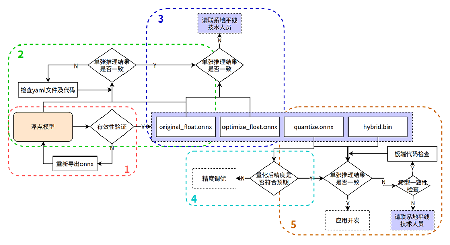
在进行排查前，请确认当前模型转换所用的Docker镜像或转换环境版本，并保留版本信息
1. 验证浮点onnx模型的推理结果
进入模型转换环境，来测试浮点onnx模型(特指从DL框架导出的onnx模型)的单张结果，此步骤结果应与训练后的模型推理结果完全一致（nv12格式除外，可能会引入少许差异）
可参考如下示例代码步骤，来确认浮点onnx模型的推理的步骤、数据预处理、后处理代码是否正确！
from horizon_tc_ui import HB_ONNXRuntime
import numpy as np
import cv2
def preprocess(input_name):
# BGR->RGB、Resize、CenterCrop···
# HWC->CHW
# normalization
return data
def main():
# 加载模型文件
sess = HB_ONNXRuntime(model_file=MODEL_PATH)
# 获取输入&输出节点名称
input_names = [input.name for input in sess.get_inputs()]
output_names = [output.name for output in sess.get_outputs()]
# 准备模型输入数据
feed_dict = dict()
for input_name in input_names:
feed_dict[input_name] = preprocess(input_name)
# 原始浮点onnx，数据dtype=float32
outputs = sess.run_feature(output_names, feed_dict, input_offset=0)
# 后处理
postprocess(outputs)
if __name__ == '__main__':
main()
2. 验证yaml配置文件以及前、后处理代码的正确性
测试 original_float.onnx 模型的单张结果，应与浮点onnx模型推理结果完全一致（nv12格式除外，由于nv12数据本身有损，可能会引入少许差异）
使用开源工具 Netron 打开 original_float.onnx 模型，并查看预处理节点 HzPreprocess 算子的详细属性，获取我们 数据预处理 需要的参数：data_format 和 input_type。
由于HzPreprocess节点的存在，会使得转换后的模型其预处理操作可能会和原始模型有所不同，该算子是在进行模型转换时，根据yaml配置文件中的配置参数（input_type_rt、input_type_train以及norm_type、mean_value、scale_value）来决定是否为模型加入HzPreprocess节点，预处理节点的生成细节，请参考PTQ原理及步骤详解章节的 norm_type 配置参数说明 内容，另外预处理节点会出现在转换过程产生的所有产物中。
理想状态下，这个HzPreprocess节点应该完成 input_type_rt 到 input_type_train 的完整转换， 但实际情况是整个type转换过程需要使用地平线AI芯片硬件完成，但ONNX模型里面并没有包含硬件转换的部分，因此ONNX的真实输入类型会使用一种中间类型，这种中间类型就是硬件对 input_type_rt 的处理结果类型， 故针对图像输入数据类型为：RGB/BGR/NV12/YUV444/GRAY，并且数据dtype= uint8的模型时，在预处理代码中需要做 -128 的操作，featuremap 数据类型因为使用的是float32，因此预处理代码中 不需要-128 的操作； original_float.onnx的数据layout(NCHW/NHWC)会保持和原始浮点模型的输入layout一致。
可参考如下示例代码步骤，来确认 original_float.onnx 模型的推理的步骤、数据预处理、后处理代码是否正确！
数据预处理部分建议参考使用地平线模型转换 horizon_model_convert_sample 示例包中的caffe、onnx等示例模型的预处理步骤方法
from horizon_tc_ui import HB_ONNXRuntime
import numpy as np
import cv2
def preprocess(input_name):
# BGR->RGB、Resize、CenterCrop···
# HWC->CHW（通过onnx模型输入节点的具体shape来判断是否需要做layout转换）
# normalization（若已通过yaml文件将norm操作放入了模型中，则不要在预处理中做重复操作）
#-128（图像输入模型，仅在使用hb_session.run接口时需要自行在预处理完成-128，其他接口通过input_offset控制即可）
return data
def main():
# 加载模型文件
sess = HB_ONNXRuntime(model_file=MODEL_PATH)
# 获取输入&输出节点名称
input_names = [input.name for input in sess.get_inputs()]
output_names = [output.name for output in sess.get_outputs()]
# 准备模型输入数据
feed_dict = dict()
for input_name in input_names:
feed_dict[input_name] = preprocess(input_name)
#图像输入的模型（RGB/BGR/NV12/YUV444/GRAY），数据dtype= uint8
outputs = sess.run(output_names, feed_dict, input_offset=128)
# featuremap模型，数据dtype=float32, 若模型输入非featuremap，请注释掉下行代码！
outputs = sess.run_feature(output_names, feed_dict, input_offset=0)
# 混合多输入（即同时包含featuremap和图像输入）模型，若模型输入非多输入，请注释掉下行代码！
outputs = sess.hb_session.run(output_names, feed_dict) #-128的操作需要在预处理时完成
# 后处理
postprocess(outputs)
if __name__ == '__main__':
main()
3. 验证模型的图优化阶段未引入精度误差
测试 optimize_float.onnx 模型的单张结果，应与original_float.onnx推理结果完全一致
使用开源工具 Netron 打开 optimize_float.onnx 模型，并查看预处理节点 HzPreprocess 算子的详细属性，获取我们数据预处理需要的参数：data_format和 input_type;
optimize_float.onnx模型的推理可参考如下示例代码步骤，来确认 optimize_float.onnx 模型的推理的步骤、数据预处理、后处理代码是否正确！
数据预处理部分建议参考使用地平线模型转换 horizon_model_convert_sample 示例包中的caffe、onnx等示例模型的预处理步骤方法
from horizon_tc_ui import HB_ONNXRuntime
import numpy as np
import cv2
def preprocess(input_name):
# BGR->RGB、Resize、CenterCrop···
# HWC->CHW（通过onnx模型输入节点的具体shape来判断是否需要做layout转换）
# normalization（若已通过yaml文件将norm操作放入了模型中，则不要在预处理中做重复操作）
#-128（图像输入模型，仅在使用hb_session.run接口时需要自行在预处理完成-128，其他接口通过input_offset控制即可）
return data
def main():
# 加载模型文件
sess = HB_ONNXRuntime(model_file=MODEL_PATH)
# 获取输入&输出节点名称
input_names = [input.name for input in sess.get_inputs()]
output_names = [output.name for output in sess.get_outputs()]
# 准备模型输入数据
feed_dict = dict()
for input_name in input_names:
feed_dict[input_name] = preprocess(input_name)
#图像输入的模型（RGB/BGR/NV12/YUV444/GRAY），数据dtype= uint8
outputs = sess.run(output_names, feed_dict, input_offset=128)
# featuremap模型，数据dtype=float32, 若模型输入非featuremap，请注释掉下行代码！
outputs = sess.run_feature(output_names, feed_dict, input_offset=0)
# 混合多输入（即同时包含featuremap和图像输入）模型，若模型输入非多输入，请注释掉下行代码！
outputs = sess.hb_session.run(output_names, feed_dict) #-128的操作需要在预处理时完成
# 后处理
postprocess(outputs)
if __name__ == '__main__':
main()
4. 验证量化精度是否满足预期
测试quantized.onnx的精度指标。
使用开源工具 Netron 打开 quantized.onnx 模型，并查看预处理节点 HzPreprocess 算子的详细属性，获取我们数据预处理需要的参数：data_format和 input_type;
quantized.onnx模型的推理可参考如下示例代码步骤，来确认 quantized.onnx 模型的推理的步骤、数据预处理、后处理代码是否正确！
数据预处理部分建议参考使用地平线模型转换 horizon_model_convert_sample 示例包中的caffe、onnx等示例模型的预处理步骤方法
from horizon_tc_ui import HB_ONNXRuntime
import numpy as np
import cv2
def preprocess(input_name):
# BGR->RGB、Resize、CenterCrop···
# HWC->CHW（通过onnx模型输入节点的具体shape来判断是否需要做layout转换）
# normalization（若已通过yaml文件将norm操作放入了模型中，则不要在预处理中做重复操作）
#-128（图像输入模型，仅在使用hb_session.run接口时需要自行在预处理完成-128，其他接口通过input_offset控制即可）
return data
def main():
# 加载模型文件
sess = HB_ONNXRuntime(model_file=MODEL_PATH)
# 获取输入&输出节点名称
input_names = [input.name for input in sess.get_inputs()]
output_names = [output.name for output in sess.get_outputs()]
# 准备模型输入数据
feed_dict = dict()
for input_name in input_names:
feed_dict[input_name] = preprocess(input_name)
#图像输入的模型（RGB/BGR/NV12/YUV444/GRAY），数据dtype= uint8
outputs = sess.run(output_names, feed_dict, input_offset=128)
# featuremap模型，数据dtype=float32, 若模型输入非featuremap，请注释掉下行代码！
outputs = sess.run_feature(output_names, feed_dict, input_offset=0)
# 混合多输入（即同时包含featuremap和图像输入）模型，若模型输入非多输入，请注释掉下行代码！
outputs = sess.hb_session.run(output_names, feed_dict) #-128的操作需要在预处理时完成
# 后处理
postprocess(outputs)
if __name__ == '__main__':
main()
5. 确保模型编译过程无误且板端推理代码正确
使用 hb_model_verifier 工具验证quantized.onnx和.bin的一致性，模型输出应至少满足小数点后2-3位对齐
hb_model_verifier工具（详细介绍可参考）的使用方法，请参考PTQ原理及步骤详解章节的 hb_model_verifier 工具 内容。
若模型一致性校验通过，则请仔细检查开发板端的前、后处理代码！
若quantized.onnx与.bin模型一致性校验失败，请联系地平线技术人员
8.9.3.5. 模型量化yaml配置文件模板
caffe模型量化yaml文件模板
请新建 caffe_config.yaml 文件，并直接拷贝以下内容，填写空白参数位置即可，参数的具体说明请参考PTQ原理及步骤详解章节内容
# Copyright (c) 2020 Horizon Robotics.All Rights Reserved.
#
# The material in this file is confidential and contains trade secrets
# of Horizon Robotics Inc. This is proprietary information owned by
# Horizon Robotics Inc. No part of this work may be disclosed,
# reproduced, copied, transmitted, or used in any way for any purpose,
# without the express written permission of Horizon Robotics Inc.
# 模型转化相关的参数
# ------------------------------------
# model conversion related parameters
model_parameters:
# Caffe浮点网络数据模型文件
# -----------------------------------------------------------
# the model file of floating-point Caffe neural network data
# 请配置需要转换的模型文件相对路径或绝对路径
caffe_model: ''
# caffe_model: './horizon_x3_caffe.caffemodel'
# Caffe网络描述文件
# ---------------------------------------------------------
# the file describes the structure of Caffe neural network
# 请配置需要转换的模型文件相对路径或绝对路径
prototxt: ''
# prototxt: './horizon_x3_caffe.prototxt'
# 适用BPU架构
# --------------------------------
# the applicable BPU architecture
# 保持默认，不要修改！
march: "bernoulli2"
# 指定模型转换过程中是否输出各层的中间结果，如果为True，则输出所有层的中间输出结果，
# --------------------------------------------------------------------------------------
# specifies whether or not to dump the intermediate results of all layers in conversion
# if set to True, then the intermediate results of all layers shall be dumped
# 保持默认，不要修改！
layer_out_dump: False
# 模型转换输出的结果的存放目录
# -----------------------------------------------------------
# the directory in which model conversion results are stored
# 保持默认，可不配置
working_dir: 'model_output'
# 模型转换输出的用于上板执行的模型文件的名称前缀
# -----------------------------------------------------------------------------------------
# model conversion generated name prefix of those model files used for dev board execution
# 模型转换后 输出的成果物 名字前缀， 可以根据自身需要配置
output_model_file_prefix: 'horizon_x3'
# 模型输入相关参数, 若输入多个节点, 则应使用';'进行分隔, 使用默认缺省设置则写None
# ---------------------------------------------------------------------------------
# model input related parameters,
# please use ";" to seperate when inputting multiple nodes,
# please use None for default setting
input_parameters:
# (选填) 模型输入的节点名称, 此名称应与模型文件中的名称一致, 否则会报错, 不填则会使用模型文件中的节点名称
# --------------------------------------------------------------------------------------------------------
# (Optional) node name of model input,
# it shall be the same as the name of model file, otherwise an error will be reported,
# the node name of model file will be used when left blank
# 保持默认，可不配置
input_name: ""
# 网络实际执行时，输入给网络的数据格式，包括 nv12/rgb/bgr/yuv444/gray/featuremap,
# ------------------------------------------------------------------------------------------
# the data formats to be passed into neural network when actually performing neural network
# available options: nv12/rgb/bgr/yuv444/gray/featuremap,
# 此选项为 模型转换后在X3芯片上运行的数据类型，一般建议配置为nv12, 若想使用其他数据类型，请根据自身需要配置
input_type_rt: ''
# input_type_rt: 'nv12'
# 网络实际执行时输入的数据排布, 可选值为 NHWC/NCHW
# 若input_type_rt配置为nv12，则此处参数不需要配置
# ------------------------------------------------------------------
# the data layout formats to be passed into neural network when actually performing neural network, available options: NHWC/NCHW
# If input_type_rt is configured as nv12, then this parameter does not need to be configured
input_layout_rt: ''
#input_layout_rt: '' 若input_type_rt配置为nv12，则此处参数不需要配置
#input_layout_rt: 'NHWC'
# 网络训练时输入的数据格式，可选的值为rgb/bgr/gray/featuremap/yuv444
# --------------------------------------------------------------------
# the data formats in network training
# available options: rgb/bgr/gray/featuremap/yuv444
# 此选项配置来源：原始浮点模型训练框架中所使用训练的数据类型
input_type_train: ''
# input_type_train: 'bgr'
# 网络训练时输入的数据排布, 可选值为 NHWC/NCHW
# ------------------------------------------------------------------
# the data layout in network training, available options: NHWC/NCHW
# 此选项配置来源：原始浮点模型训练框架中所使用训练的数据排布
input_layout_train: ''
# input_layout_train: 'NCHW'
# input_layout_train: 'NHWC'
# (选填) 模型网络的输入大小, 以'x'分隔, 不填则会使用模型文件中的网络输入大小，否则会覆盖模型文件中输入大小
# -------------------------------------------------------------------------------------------
# (Optional)the input size of model network, seperated by 'x'
# note that the network input size of model file will be used if left blank
# otherwise it will overwrite the input size of model file
# 保持默认，可不配置
input_shape: ''
# 网络实际执行时，输入给网络的batch_size, 默认值为1
# ---------------------------------------------------------------------
# the data batch_size to be passed into neural network when actually performing neural network, default value: 1
#input_batch: 1
# 网络输入的预处理方法，主要有以下几种：
# no_preprocess 不做任何操作，对应的 mean_value 或者 scale_value 都不需要配置！
# data_mean 减去通道均值mean_value
# data_scale 对图像像素乘以data_scale系数
# data_mean_and_scale 减去通道均值后再乘以scale系数，标识下方对应的 mean_value 和 scale_value 都需要配置！
# -------------------------------------------------------------------------------------------
# preprocessing methods of network input, available options:
# 'no_preprocess' indicates that no preprocess will be made
# 'data_mean' indicates that to minus the channel mean, i.e. mean_value
# 'data_scale' indicates that image pixels to multiply data_scale ratio
# 'data_mean_and_scale' indicates that to multiply scale ratio after channel mean is minused
# 若配置的是data_mean_and_scale，则下面的 mean_value 和 scale_value都必须配置，若norm_type 选择只有data_mean 或者 data_scale，那只用单独配置对应的 mean_value 或者 scale_value即可，并将没有使能的选项注释掉！
norm_type: ''
# norm_type: 'data_mean_and_scale'
# 图像减去的均值, 如果是通道均值，value之间必须用空格分隔
# --------------------------------------------------------------------------
# the mean value minused by image
# note that values must be seperated by space if channel mean value is used
# 根据norm_type来决定是否需要配置此选项，若norm_type 选择只有data_mean，则只需单独配置此选项并将data_scale注释掉； 反之注释掉此选项！
mean_value:
# mean_value: 128.0
# mean_value: 111.0 109.0 118.0
# 图像预处理缩放比例，如果是通道缩放比例，value之间必须用空格分隔
# ---------------------------------------------------------------------------
# scale value of image preprocess
# note that values must be seperated by space if channel scale value is used
# 根据norm_type来决定是否需要配置此选项，若norm_type 选择只有data_scale，则只需单独配置此选项并将data_mean注释掉； 反之注释掉此选项！
scale_value:
# scale_value: 0.0078125
# scale_value: 0.0078125 0.001215 0.003680
# 模型量化相关参数
# -----------------------------
# model calibration parameters
calibration_parameters:
# 模型量化的参考图像的存放目录，图片格式支持Jpeg、Bmp等格式，输入的图片
# 应该是使用的典型场景，一般是从测试集中选择20~100张图片，另外输入
# 的图片要覆盖典型场景，不要是偏僻场景，如过曝光、饱和、模糊、纯黑、纯白等图片
# 若有多个输入节点, 则应使用';'进行分隔
# -------------------------------------------------------------------------------------------------
# the directory where reference images of model quantization are stored
# image formats include JPEG, BMP etc.
# should be classic application scenarios, usually 20~100 images are picked out from test datasets
# in addition, note that input images should cover typical scenarios
# and try to avoid those overexposed, oversaturated, vague,
# pure blank or pure white images
# use ';' to seperate when there are multiple input nodes
# 请根据 02_preprocess.sh 脚本中的文件夹路径来配置
cal_data_dir: ''
# cal_data_dir: './calibration_data_yuv_f32'
# 校准数据二进制文件的数据存储类型，可选值为：float32, uint8
# calibration data binary file save type, available options: float32, uint8
# 保持默认，一般情况下都是float32数据，若非float32数据，请配置uint8
cal_data_type: 'float32'
# 如果输入的图片文件尺寸和模型训练的尺寸不一致时，并且preprocess_on为true，
# 则将采用默认预处理方法(skimage resize)，
# 将输入图片缩放或者裁减到指定尺寸，否则，需要用户提前把图片处理为训练时的尺寸
# ---------------------------------------------------------------------------------
# In case the size of input image file is different from that of in model training
# and that preprocess_on is set to True,
# shall the default preprocess method(skimage resize) be used
# i.e., to resize or crop input image into specified size
# otherwise user must keep image size as that of in training in advance
# preprocess_on: False
# 模型量化的算法类型，支持kl、max、default、load，通常采用default即可满足要求, 若为QAT导出的模型, 则应选择load
# ----------------------------------------------------------------------------------
# types of model quantization algorithms, usually default will meet the need
# available options:kl, max, default and load
# if converted model is quanti model exported from QAT , then choose `load`
# 保持默认
calibration_type: 'default'
# 该参数为'max'校准方法的参数，用以调整'max'校准的截取点。此参数仅在calibration_type为'max'时有效。
# 该参数取值范围：0.0 ~ 1.0。常用配置选项有：0.99999/0.99995/0.99990/0.99950/0.99900。
# ------------------------------------------------------------------------------------------------
# this is the parameter of the 'max' calibration method and it is used for adjusting the intercept point of the 'max' calibration.
# this parameter will only become valid when the calibration_type is specified as 'max'.
# RANGE: 0.0 - 1.0. Typical options includes: 0.99999/0.99995/0.99990/0.99950/0.99900.
# max_percentile: 0.99996
# 编译器相关参数
# ----------------------------
# compiler related parameters
compiler_parameters:
# 编译策略，支持bandwidth和latency两种优化模式;
# bandwidth以优化ddr的访问带宽为目标；
# latency以优化推理时间为目标
# -------------------------------------------------------------------------------------------
# compilation strategy, there are 2 available optimization modes: 'bandwidth' and 'lantency'
# the 'bandwidth' mode aims to optimize ddr access bandwidth
# while the 'lantency' mode aims to optimize inference duration
# 保持默认
compile_mode: 'latency'
# 设置debug为True将打开编译器的debug模式，能够输出性能仿真的相关信息，如帧率、DDR带宽占用等
# -----------------------------------------------------------------------------------
# the compiler's debug mode will be enabled by setting to True
# this will dump performance simulation related information
# such as: frame rate, DDR bandwidth usage etc.
# 保持默认
debug: False
# 编译模型指定核数，不指定默认编译单核模型, 若编译双核模型，将下边注释打开即可
# -------------------------------------------------------------------------------------
# specifies number of cores to be used in model compilation
# as default, single core is used as this value left blank
# please delete the "# " below to enable dual-core mode when compiling dual-core model
# core_num: 2
# 优化等级可选范围为O0~O3
# O0不做任何优化, 编译速度最快，优化程度最低,
# O1-O3随着优化等级提高，预期编译后的模型的执行速度会更快，但是所需编译时间也会变长。
# 推荐用O2做最快验证
# ----------------------------------------------------------------------------------------------------------
# optimization level ranges between O0~O3
# O0 indicates that no optimization will be made
# the faster the compilation, the lower optimization level will be
# O1-O3: as optimization levels increase gradually, model execution, after compilation, shall become faster
# while compilation will be prolonged
# it is recommended to use O2 for fastest verification
# 保持默认
optimize_level: 'O3'
onnx模型量化yaml文件模板
请新建 onnx_config.yaml 文件，并直接拷贝以下内容，填写空白参数位置即可，参数的具体说明请参考PTQ原理及步骤详解章节内容
# Copyright (c) 2020 Horizon Robotics.All Rights Reserved.
#
# The material in this file is confidential and contains trade secrets
# of Horizon Robotics Inc. This is proprietary information owned by
# Horizon Robotics Inc. No part of this work may be disclosed,
# reproduced, copied, transmitted, or used in any way for any purpose,
# without the express written permission of Horizon Robotics Inc.
# 模型转化相关的参数
# ------------------------------------
# model conversion related parameters
model_parameters:
# Onnx浮点网络数据模型文件
# ---------------------------------------------------------------------------------------------------------
# the model file of floating-point Onnx neural network data
# 请配置需要转换的模型文件相对路径或绝对路径
onnx_model: ''
# onnx_model: './horizon_x3_onnx.onnx'
# 适用BPU架构
# --------------------------------
# the applicable BPU architecture
# 保持默认，不要修改！
march: "bernoulli2"
# 指定模型转换过程中是否输出各层的中间结果，如果为True，则输出所有层的中间输出结果，
# --------------------------------------------------------------------------------------
# specifies whether or not to dump the intermediate results of all layers in conversion
# if set to True, then the intermediate results of all layers shall be dumped
# 保持默认，不要修改！
layer_out_dump: False
# 模型转换输出的结果的存放目录
# -----------------------------------------------------------
# the directory in which model conversion results are stored
# 保持默认，可不配置
working_dir: 'model_output'
# 模型转换输出的用于上板执行的模型文件的名称前缀
# -----------------------------------------------------------------------------------------
# model conversion generated name prefix of those model files used for dev board execution
# 模型转换后 输出的成果物 名字前缀， 可以根据自身需要配置
output_model_file_prefix: 'horizon_x3'
# 模型输入相关参数, 若输入多个节点, 则应使用';'进行分隔, 使用默认缺省设置则写None
# ---------------------------------------------------------------------------------
# model input related parameters,
# please use ";" to seperate when inputting multiple nodes,
# please use None for default setting
input_parameters:
# (选填) 模型输入的节点名称, 此名称应与模型文件中的名称一致, 否则会报错, 不填则会使用模型文件中的节点名称
# --------------------------------------------------------------------------------------------------------
# (Optional) node name of model input,
# it shall be the same as the name of model file, otherwise an error will be reported,
# the node name of model file will be used when left blank
# 保持默认，可不配置
input_name: ""
# 网络实际执行时，输入给网络的数据格式，包括 nv12/rgb/bgr/yuv444/gray/featuremap,
# ------------------------------------------------------------------------------------------
# the data formats to be passed into neural network when actually performing neural network
# available options: nv12/rgb/bgr/yuv444/gray/featuremap,
# 此选项为 模型转换后在X3芯片上运行的数据类型，一般建议配置为nv12, 若想使用其他数据类型，请根据自身需要配置
input_type_rt: ''
# input_type_rt: 'nv12'
# 网络实际执行时输入的数据排布, 可选值为 NHWC/NCHW
# 若input_type_rt配置为nv12，则此处参数不需要配置
# ------------------------------------------------------------------
# the data layout formats to be passed into neural network when actually performing neural network, available options: NHWC/NCHW
# If input_type_rt is configured as nv12, then this parameter does not need to be configured
input_layout_rt: ''
#input_layout_rt: '' 若input_type_rt配置为nv12，则此处参数不需要配置
#input_layout_rt: 'NHWC'
# 网络训练时输入的数据格式，可选的值为rgb/bgr/gray/featuremap/yuv444
# --------------------------------------------------------------------
# the data formats in network training
# available options: rgb/bgr/gray/featuremap/yuv444
# 此选项配置来源：原始浮点模型训练框架中所使用训练的数据类型
input_type_train: ''
# input_type_train: 'bgr'
# 网络训练时输入的数据排布, 可选值为 NHWC/NCHW
# ------------------------------------------------------------------
# the data layout in network training, available options: NHWC/NCHW
# 此选项配置来源：原始浮点模型训练框架中所使用训练的数据排布
input_layout_train: ''
# input_layout_train: 'NCHW'
# input_layout_train: 'NHWC'
# (选填) 模型网络的输入大小, 以'x'分隔, 不填则会使用模型文件中的网络输入大小，否则会覆盖模型文件中输入大小
# -------------------------------------------------------------------------------------------
# (Optional)the input size of model network, seperated by 'x'
# note that the network input size of model file will be used if left blank
# otherwise it will overwrite the input size of model file
# 保持默认，可不配置
input_shape: ''
# 网络实际执行时，输入给网络的batch_size, 默认值为1
# ---------------------------------------------------------------------
# the data batch_size to be passed into neural network when actually performing neural network, default value: 1
#input_batch: 1
# 网络输入的预处理方法，主要有以下几种：
# no_preprocess 不做任何操作，对应的 mean_value 或者 scale_value 都不需要配置！
# data_mean 减去通道均值mean_value
# data_scale 对图像像素乘以data_scale系数
# data_mean_and_scale 减去通道均值后再乘以scale系数，标识下方对应的 mean_value 和 scale_value 都需要配置！
# -------------------------------------------------------------------------------------------
# preprocessing methods of network input, available options:
# 'no_preprocess' indicates that no preprocess will be made
# 'data_mean' indicates that to minus the channel mean, i.e. mean_value
# 'data_scale' indicates that image pixels to multiply data_scale ratio
# 'data_mean_and_scale' indicates that to multiply scale ratio after channel mean is minused
# 若配置的是data_mean_and_scale，则下面的 mean_value 和 scale_value都必须配置，若norm_type 选择只有data_mean 或者 data_scale，那只用单独配置对应的 mean_value 或者 scale_value即可，并将没有使能的选项注释掉！
norm_type: ''
# norm_type: 'data_mean_and_scale'
# 图像减去的均值, 如果是通道均值，value之间必须用空格分隔
# --------------------------------------------------------------------------
# the mean value minused by image
# note that values must be seperated by space if channel mean value is used
# 根据norm_type来决定是否需要配置此选项，若norm_type 选择只有data_mean，则只需单独配置此选项并将data_scale注释掉； 反之注释掉此选项！
mean_value:
# mean_value: 128.0
# mean_value: 111.0 109.0 118.0
# 图像预处理缩放比例，如果是通道缩放比例，value之间必须用空格分隔
# ---------------------------------------------------------------------------
# scale value of image preprocess
# note that values must be seperated by space if channel scale value is used
# 根据norm_type来决定是否需要配置此选项，若norm_type 选择只有data_scale，则只需单独配置此选项并将data_mean注释掉； 反之注释掉此选项！
scale_value:
# scale_value: 0.0078125
# scale_value: 0.0078125 0.001215 0.003680
# 模型量化相关参数
# -----------------------------
# model calibration parameters
calibration_parameters:
# 模型量化的参考图像的存放目录，图片格式支持Jpeg、Bmp等格式，输入的图片
# 应该是使用的典型场景，一般是从测试集中选择20~100张图片，另外输入
# 的图片要覆盖典型场景，不要是偏僻场景，如过曝光、饱和、模糊、纯黑、纯白等图片
# 若有多个输入节点, 则应使用';'进行分隔
# -------------------------------------------------------------------------------------------------
# the directory where reference images of model quantization are stored
# image formats include JPEG, BMP etc.
# should be classic application scenarios, usually 20~100 images are picked out from test datasets
# in addition, note that input images should cover typical scenarios
# and try to avoid those overexposed, oversaturated, vague,
# pure blank or pure white images
# use ';' to seperate when there are multiple input nodes
# 请根据 02_preprocess.sh 脚本中的文件夹路径来配置
cal_data_dir: ''
# cal_data_dir: './calibration_data_yuv_f32'
# 校准数据二进制文件的数据存储类型，可选值为：float32, uint8
# calibration data binary file save type, available options: float32, uint8
# 保持默认，一般情况下都是float32数据，若非float32数据，请配置uint8
cal_data_type: 'float32'
# 如果输入的图片文件尺寸和模型训练的尺寸不一致时，并且preprocess_on为true，
# 则将采用默认预处理方法(skimage resize)，
# 将输入图片缩放或者裁减到指定尺寸，否则，需要用户提前把图片处理为训练时的尺寸
# ---------------------------------------------------------------------------------
# In case the size of input image file is different from that of in model training
# and that preprocess_on is set to True,
# shall the default preprocess method(skimage resize) be used
# i.e., to resize or crop input image into specified size
# otherwise user must keep image size as that of in training in advance
# preprocess_on: False
# 模型量化的算法类型，支持kl、max、default、load，通常采用default即可满足要求, 若为QAT导出的模型, 则应选择load
# ----------------------------------------------------------------------------------
# types of model quantization algorithms, usually default will meet the need
# available options:kl, max, default and load
# if converted model is quanti model exported from QAT , then choose `load`
# 保持默认
calibration_type: 'default'
# 该参数为'max'校准方法的参数，用以调整'max'校准的截取点。此参数仅在calibration_type为'max'时有效。
# 该参数取值范围：0.0 ~ 1.0。常用配置选项有：0.99999/0.99995/0.99990/0.99950/0.99900。
# ------------------------------------------------------------------------------------------------
# this is the parameter of the 'max' calibration method and it is used for adjusting the intercept point of the 'max' calibration.
# this parameter will only become valid when the calibration_type is specified as 'max'.
# RANGE: 0.0 - 1.0. Typical options includes: 0.99999/0.99995/0.99990/0.99950/0.99900.
# max_percentile: 0.99996
# 编译器相关参数
# ----------------------------
# compiler related parameters
compiler_parameters:
# 编译策略，支持bandwidth和latency两种优化模式;
# bandwidth以优化ddr的访问带宽为目标；
# latency以优化推理时间为目标
# -------------------------------------------------------------------------------------------
# compilation strategy, there are 2 available optimization modes: 'bandwidth' and 'lantency'
# the 'bandwidth' mode aims to optimize ddr access bandwidth
# while the 'lantency' mode aims to optimize inference duration
# 保持默认
compile_mode: 'latency'
# 设置debug为True将打开编译器的debug模式，能够输出性能仿真的相关信息，如帧率、DDR带宽占用等
# -----------------------------------------------------------------------------------
# the compiler's debug mode will be enabled by setting to True
# this will dump performance simulation related information
# such as: frame rate, DDR bandwidth usage etc.
# 保持默认
debug: False
# 编译模型指定核数，不指定默认编译单核模型, 若编译双核模型，将下边注释打开即可
# -------------------------------------------------------------------------------------
# specifies number of cores to be used in model compilation
# as default, single core is used as this value left blank
# please delete the "# " below to enable dual-core mode when compiling dual-core model
# core_num: 2
# 优化等级可选范围为O0~O3
# O0不做任何优化, 编译速度最快，优化程度最低,
# O1-O3随着优化等级提高，预期编译后的模型的执行速度会更快，但是所需编译时间也会变长。
# 推荐用O2做最快验证
# ----------------------------------------------------------------------------------------------------------
# optimization level ranges between O0~O3
# O0 indicates that no optimization will be made
# the faster the compilation, the lower optimization level will be
# O1-O3: as optimization levels increase gradually, model execution, after compilation, shall become faster
# while compilation will be prolonged
# it is recommended to use O2 for fastest verification
# 保持默认
optimize_level: 'O3'
8.9.3.6. x3多核bpu使用说明
因X3中有2颗BPU核，所以在BPU使用中存在单核模型和双核模型的情况，多核BPU的使用注意事项参考文档：X3多核BPU的合理使用技巧与建议
8.9.3.7. 定点.bin模型上板多batch使用说明
1.模型转换时，在yaml配置文件里通过input_batch配置batch_size；
2.上板bin模型输入时，以原始模型维度1×3×224×224，修改input_batch为10，也就是10×3×224×224这个维度举例：
准备数据： Image图像数据：设置
aligned_shape = valid_shape，然后按单张数据准备的方式，把10张图片依次按顺序写入申请的内存空间； FeatureMap数据：按aligned_shape把数据padding好，然后按单batch数据准备的方式，把10份数据依次按顺序写入申请的内存空间，模型推理流程和单batch模型推理流程一致；
8.9.3.8. 应用开发技巧说明
多模型控制策略
多模型场景中，每个模型都需要使用有限的计算资源完成推理，不可避免地会出现计算资源地争夺情况。为了便于您控制多模型的执行，地平线提供了模型优先级的控制策略供您使用。
模型优先级控制
X3芯片BPU计算单元硬件本身没有任务抢占功能，对于每一个推理任务，一旦它进到BPU模型计算之后，在该任务执行完成之前都会一直占用BPU，其他任务只能排队等待。 此时很容易出现BPU计算资源被一个大模型推理任务所独占，进而影响其他高优先级模型的推理任务执行。 针对这种问题，Runtime SDK基于模型的优先级通过软件的方式实现了BPU资源抢占的功能。
其中有以下点需要被关注：
编译后的数据指令模型在BPU上进行推理计算时，它将表现为1个或者多个function-call 的调用，其中function-call是BPU的执行粒度，多个function-call调用任务将在BPU的硬件队列上按序进行调度，当一个模型所有的function-call都执行完成， 那么一个模型推理任务也就执行完成了。
基于上述描述，BPU模型任务抢占粒度设计为function-call更为简单，即BPU执行完一个function-call之后，暂时挂起当前模型，然后切入执行另外一个模型，当新模型执行完成之后，再恢复原来模型的状态继续运行。但是这里存在两个问题， 第一是经过编译器编译出来的模型function-call都是merge在一起，此时模型只有一个大的function-call，它无法被抢占； 第二是每个function-call的执行时间比较长或者不固定，也会造成抢占时机不固定，影响抢占效果。
为了解决上述的两个问题，地平线在模型转换工具和系统软件都给予了支持，下面分别介绍其实现原理和操作方法：
首先，在 模型转换 阶段，可以在模型的yaml配置文件中的编译器相关参数（即
compiler_parameters）中， 通过max_time_per_fc参数（以微秒为单位，默认取值为0，即不做限制。）来设置每个function-call的执行时间。 假设某function-call执行时间为10ms，如将其max_time_per_fc设置为500， 则这个function-call将会被拆分成20个。其次，系统软件层面设计了
BPLAT_CORELIMIT环境变量用于设置可抢占的粒度。 如将此参数设置为2，则高优先级被调度执行的时间为前面2个低优先级function-call的处理时间。 如果为0，则不抢占。因此，为了尽早执行高优先级的任务，可在 上板 时，先运行export BPLAT_CORELIMIT=1将此环境变量的取值设置为1。 这样当系统底层收到模型的function-call时，会判断其优先级，对于优先级高的function-call则放入单独队列，以便能够在一个function-call 执行完成之后，抢占到BPU资源。接着，由于模型抢占机制是在libdnn中实现的，继续设置
dnn的infer接口提供的hbDNNInferCtrlParam.priority参数。如：配置infer任务为HB_DNN_PRIORITY_PREEMP(255)，则为抢占任务，可支持function-call级别抢占； 您也可以配置优先级为[0,255]的任意等级，在同等条件下的执行队列中(粒度为任务)，优先级越高的task会更优先执行。 需要说明的是，目前DNN内部最多支持8个任务同时进行。抢占任务不受此限制。 即若已经有8个任务正在运行，提交非抢占任务需要等待正在运行的任务数小于8才可以开始运行，提交抢占任务可以直接开始运行。
应用调优建议
地平线建议的应用调优策略包括工程任务调度和算法任务整合两个方面。
工程任务调度 方面，我们推荐您使用一些workflow调度管理工具，充分发挥不同任务阶段的并行能力。 一般AI应用可以简单拆分为输入前处理、模型推理、输出后处理三个阶段，在简易流程下，其处理流程如下图。

充分利用workflow管理实现不同任务阶段并行后，理想的任务处理流程将达到下图效果。

算法任务整合 方面，地平线推荐您使用多任务模型。
这样一方面可以在一定程度上避免多模型调度管理的困难；另一方面多任务模型也能充分共享主干网络的计算量，较于使用各个独立的模型，可以在整个AI应用级别明显减少计算量，从而达到更高的整体性能。